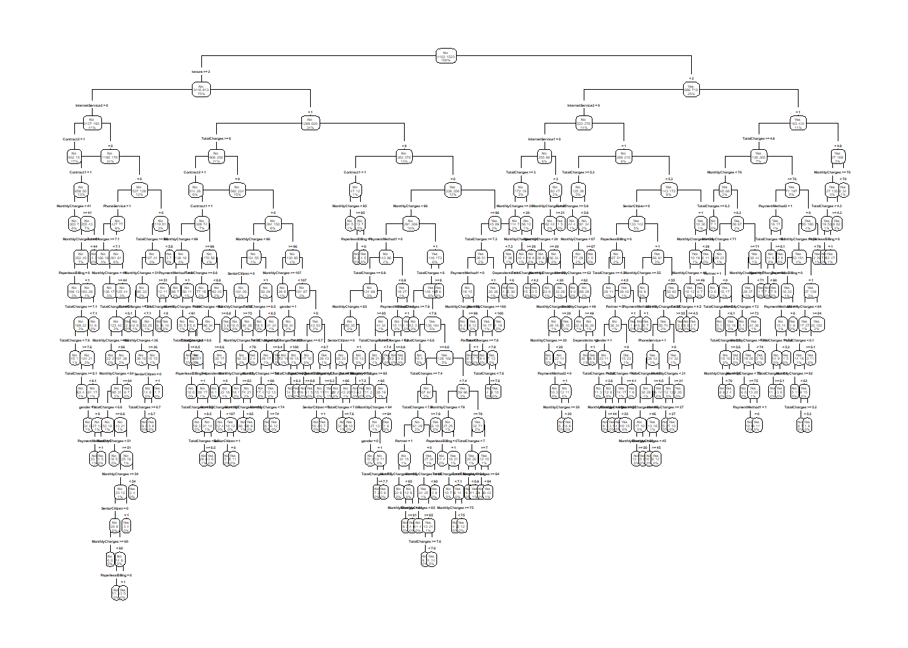
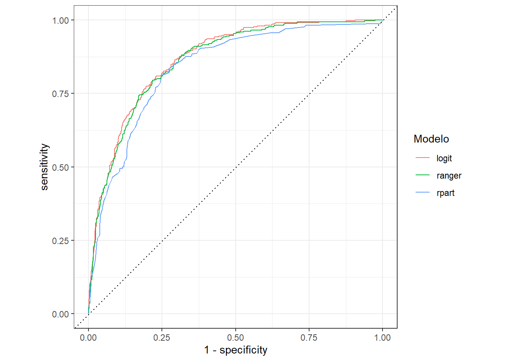

<!DOCTYPE html>
<html lang="es" xml:lang="es">
<head>

  <meta charset="utf-8" />
  <meta http-equiv="X-UA-Compatible" content="IE=edge" />
  <title>Capítulo 7 Trabajo Practico | Politica Economica II</title>
  <meta name="description" content="UNLP" />
  <meta name="generator" content="bookdown 0.26 and GitBook 2.6.7" />

  <meta property="og:title" content="Capítulo 7 Trabajo Practico | Politica Economica II" />
  <meta property="og:type" content="book" />
  
  <meta property="og:description" content="UNLP" />
  <meta name="github-repo" content="msangia/msangia.github" />

  <meta name="twitter:card" content="summary" />
  <meta name="twitter:title" content="Capítulo 7 Trabajo Practico | Politica Economica II" />
  <meta name="twitter:site" content="@msangia" />
  <meta name="twitter:description" content="UNLP" />
  

<meta name="author" content="Máximo Sangiácomo" />


  <meta name="viewport" content="width=device-width, initial-scale=1" />
  <meta name="apple-mobile-web-app-capable" content="yes" />
  <meta name="apple-mobile-web-app-status-bar-style" content="black" />
  
  
<link rel="prev" href="arboles.html"/>
<link rel="next" href="bibliografia.html"/>
<script src="libs/jquery-3.6.0/jquery-3.6.0.min.js"></script>
<script src="https://cdn.jsdelivr.net/npm/fuse.js@6.4.6/dist/fuse.min.js"></script>
<link href="libs/gitbook-2.6.7/css/style.css" rel="stylesheet" />
<link href="libs/gitbook-2.6.7/css/plugin-table.css" rel="stylesheet" />
<link href="libs/gitbook-2.6.7/css/plugin-bookdown.css" rel="stylesheet" />
<link href="libs/gitbook-2.6.7/css/plugin-highlight.css" rel="stylesheet" />
<link href="libs/gitbook-2.6.7/css/plugin-search.css" rel="stylesheet" />
<link href="libs/gitbook-2.6.7/css/plugin-fontsettings.css" rel="stylesheet" />
<link href="libs/gitbook-2.6.7/css/plugin-clipboard.css" rel="stylesheet" />


<link href="libs/anchor-sections-1.1.0/anchor-sections.css" rel="stylesheet" />
<link href="libs/anchor-sections-1.1.0/anchor-sections-hash.css" rel="stylesheet" />
<script src="libs/anchor-sections-1.1.0/anchor-sections.js"></script>
<html>
  <head>
	<link rel="shortcut icon" href="images/favicon.png" />
  </head>
  <body>
  </body>
</html>


<style type="text/css">
pre > code.sourceCode { white-space: pre; position: relative; }
pre > code.sourceCode > span { display: inline-block; line-height: 1.25; }
pre > code.sourceCode > span:empty { height: 1.2em; }
.sourceCode { overflow: visible; }
code.sourceCode > span { color: inherit; text-decoration: inherit; }
pre.sourceCode { margin: 0; }
@media screen {
div.sourceCode { overflow: auto; }
}
@media print {
pre > code.sourceCode { white-space: pre-wrap; }
pre > code.sourceCode > span { text-indent: -5em; padding-left: 5em; }
}
pre.numberSource code
  { counter-reset: source-line 0; }
pre.numberSource code > span
  { position: relative; left: -4em; counter-increment: source-line; }
pre.numberSource code > span > a:first-child::before
  { content: counter(source-line);
    position: relative; left: -1em; text-align: right; vertical-align: baseline;
    border: none; display: inline-block;
    -webkit-touch-callout: none; -webkit-user-select: none;
    -khtml-user-select: none; -moz-user-select: none;
    -ms-user-select: none; user-select: none;
    padding: 0 4px; width: 4em;
    color: #aaaaaa;
  }
pre.numberSource { margin-left: 3em; border-left: 1px solid #aaaaaa;  padding-left: 4px; }
div.sourceCode
  {   }
@media screen {
pre > code.sourceCode > span > a:first-child::before { text-decoration: underline; }
}
code span.al { color: #ff0000; font-weight: bold; } /* Alert */
code span.an { color: #60a0b0; font-weight: bold; font-style: italic; } /* Annotation */
code span.at { color: #7d9029; } /* Attribute */
code span.bn { color: #40a070; } /* BaseN */
code span.bu { } /* BuiltIn */
code span.cf { color: #007020; font-weight: bold; } /* ControlFlow */
code span.ch { color: #4070a0; } /* Char */
code span.cn { color: #880000; } /* Constant */
code span.co { color: #60a0b0; font-style: italic; } /* Comment */
code span.cv { color: #60a0b0; font-weight: bold; font-style: italic; } /* CommentVar */
code span.do { color: #ba2121; font-style: italic; } /* Documentation */
code span.dt { color: #902000; } /* DataType */
code span.dv { color: #40a070; } /* DecVal */
code span.er { color: #ff0000; font-weight: bold; } /* Error */
code span.ex { } /* Extension */
code span.fl { color: #40a070; } /* Float */
code span.fu { color: #06287e; } /* Function */
code span.im { } /* Import */
code span.in { color: #60a0b0; font-weight: bold; font-style: italic; } /* Information */
code span.kw { color: #007020; font-weight: bold; } /* Keyword */
code span.op { color: #666666; } /* Operator */
code span.ot { color: #007020; } /* Other */
code span.pp { color: #bc7a00; } /* Preprocessor */
code span.sc { color: #4070a0; } /* SpecialChar */
code span.ss { color: #bb6688; } /* SpecialString */
code span.st { color: #4070a0; } /* String */
code span.va { color: #19177c; } /* Variable */
code span.vs { color: #4070a0; } /* VerbatimString */
code span.wa { color: #60a0b0; font-weight: bold; font-style: italic; } /* Warning */
</style>

<style type="text/css">
/* Used with Pandoc 2.11+ new --citeproc when CSL is used */
div.csl-bib-body { }
div.csl-entry {
  clear: both;
}
.hanging div.csl-entry {
  margin-left:2em;
  text-indent:-2em;
}
div.csl-left-margin {
  min-width:2em;
  float:left;
}
div.csl-right-inline {
  margin-left:2em;
  padding-left:1em;
}
div.csl-indent {
  margin-left: 2em;
}
</style>

<link rel="stylesheet" href="css/style.css" type="text/css" />
<link rel="stylesheet" href="css/r4ds.css" type="text/css" />
</head>

<body>


  <div class="book without-animation with-summary font-size-2 font-family-1" data-basepath=".">

    <div class="book-summary">
      <nav role="navigation">

<ul class="summary">
<li><a href="./">Politica Economica II - UNLP</a></li>

<li class="divider"></li>
<li class="chapter" data-level="" data-path="index.html"><a href="index.html"><i class="fa fa-check"></i>Descripcion del curso</a></li>
<li class="chapter" data-level="1" data-path="intro.html"><a href="intro.html"><i class="fa fa-check"></i><b>1</b> Introduccion a R</a>
<ul>
<li class="chapter" data-level="1.1" data-path="intro.html"><a href="intro.html#primeros-pasos"><i class="fa fa-check"></i><b>1.1</b> Primeros pasos</a></li>
<li class="chapter" data-level="1.2" data-path="intro.html"><a href="intro.html#busacar-ayuda"><i class="fa fa-check"></i><b>1.2</b> Busacar ayuda</a></li>
<li class="chapter" data-level="1.3" data-path="intro.html"><a href="intro.html#tipos-de-datos"><i class="fa fa-check"></i><b>1.3</b> Tipos de datos</a></li>
<li class="chapter" data-level="1.4" data-path="intro.html"><a href="intro.html#limpieza-de-memoria"><i class="fa fa-check"></i><b>1.4</b> Limpieza de memoria</a></li>
<li class="chapter" data-level="1.5" data-path="intro.html"><a href="intro.html#asignación-de-valores"><i class="fa fa-check"></i><b>1.5</b> Asignación de valores</a></li>
<li class="chapter" data-level="1.6" data-path="intro.html"><a href="intro.html#operadores-aritméticos"><i class="fa fa-check"></i><b>1.6</b> Operadores aritméticos</a></li>
<li class="chapter" data-level="1.7" data-path="intro.html"><a href="intro.html#operadores-relacionales"><i class="fa fa-check"></i><b>1.7</b> Operadores relacionales</a></li>
<li class="chapter" data-level="1.8" data-path="intro.html"><a href="intro.html#operadores-lógicos"><i class="fa fa-check"></i><b>1.8</b> Operadores lógicos</a></li>
<li class="chapter" data-level="1.9" data-path="intro.html"><a href="intro.html#vectores"><i class="fa fa-check"></i><b>1.9</b> Vectores</a></li>
<li class="chapter" data-level="1.10" data-path="intro.html"><a href="intro.html#secuencias"><i class="fa fa-check"></i><b>1.10</b> Secuencias</a></li>
<li class="chapter" data-level="1.11" data-path="intro.html"><a href="intro.html#factores"><i class="fa fa-check"></i><b>1.11</b> Factores</a></li>
<li class="chapter" data-level="1.12" data-path="intro.html"><a href="intro.html#matrices"><i class="fa fa-check"></i><b>1.12</b> Matrices</a></li>
<li class="chapter" data-level="1.13" data-path="intro.html"><a href="intro.html#listas"><i class="fa fa-check"></i><b>1.13</b> Listas</a></li>
<li class="chapter" data-level="1.14" data-path="intro.html"><a href="intro.html#data-frames"><i class="fa fa-check"></i><b>1.14</b> Data frames</a></li>
<li class="chapter" data-level="1.15" data-path="intro.html"><a href="intro.html#r-base"><i class="fa fa-check"></i><b>1.15</b> R base</a></li>
<li class="chapter" data-level="1.16" data-path="intro.html"><a href="intro.html#apply-y-tapply"><i class="fa fa-check"></i><b>1.16</b> Apply y tapply</a></li>
<li class="chapter" data-level="1.17" data-path="intro.html"><a href="intro.html#map"><i class="fa fa-check"></i><b>1.17</b> Map</a></li>
<li class="chapter" data-level="1.18" data-path="intro.html"><a href="intro.html#loops"><i class="fa fa-check"></i><b>1.18</b> Loops</a></li>
<li class="chapter" data-level="1.19" data-path="intro.html"><a href="intro.html#condicionales"><i class="fa fa-check"></i><b>1.19</b> Condicionales</a></li>
<li class="chapter" data-level="1.20" data-path="intro.html"><a href="intro.html#funciones"><i class="fa fa-check"></i><b>1.20</b> Funciones</a>
<ul>
<li class="chapter" data-level="1.20.1" data-path="intro.html"><a href="intro.html#output-más-de-un-resultado"><i class="fa fa-check"></i><b>1.20.1</b> Output más de un resultado</a></li>
<li class="chapter" data-level="1.20.2" data-path="intro.html"><a href="intro.html#argumentos-con-valores-default"><i class="fa fa-check"></i><b>1.20.2</b> Argumentos con valores default</a></li>
</ul></li>
</ul></li>
<li class="chapter" data-level="2" data-path="bd.html"><a href="bd.html"><i class="fa fa-check"></i><b>2</b> Base de datos</a>
<ul>
<li class="chapter" data-level="2.1" data-path="bd.html"><a href="bd.html#directorio-de-trabajo"><i class="fa fa-check"></i><b>2.1</b> Directorio de trabajo</a></li>
<li class="chapter" data-level="2.2" data-path="bd.html"><a href="bd.html#cargar-datos"><i class="fa fa-check"></i><b>2.2</b> Cargar datos</a>
<ul>
<li class="chapter" data-level="2.2.1" data-path="bd.html"><a href="bd.html#ingrasar-datos-con-tidyverse"><i class="fa fa-check"></i><b>2.2.1</b> Ingrasar datos con <code>tidyverse</code></a></li>
<li class="chapter" data-level="2.2.2" data-path="bd.html"><a href="bd.html#bases-de-stata"><i class="fa fa-check"></i><b>2.2.2</b> Bases de Stata</a></li>
</ul></li>
<li class="chapter" data-level="2.3" data-path="bd.html"><a href="bd.html#problemas-de-imputación"><i class="fa fa-check"></i><b>2.3</b> Problemas de imputación</a></li>
<li class="chapter" data-level="2.4" data-path="bd.html"><a href="bd.html#exportar-datos"><i class="fa fa-check"></i><b>2.4</b> Exportar datos</a></li>
<li class="chapter" data-level="2.5" data-path="bd.html"><a href="bd.html#variables"><i class="fa fa-check"></i><b>2.5</b> Variables</a></li>
<li class="chapter" data-level="2.6" data-path="bd.html"><a href="bd.html#merge"><i class="fa fa-check"></i><b>2.6</b> Merge</a></li>
<li class="chapter" data-level="2.7" data-path="bd.html"><a href="bd.html#variables-group_by-mutate"><i class="fa fa-check"></i><b>2.7</b> Variables: group_by, mutate</a></li>
<li class="chapter" data-level="2.8" data-path="bd.html"><a href="bd.html#guardar-datos"><i class="fa fa-check"></i><b>2.8</b> Guardar datos</a></li>
<li class="chapter" data-level="2.9" data-path="bd.html"><a href="bd.html#valores-missing"><i class="fa fa-check"></i><b>2.9</b> Valores missing</a>
<ul>
<li class="chapter" data-level="2.9.1" data-path="bd.html"><a href="bd.html#eliminar-valores-missing"><i class="fa fa-check"></i><b>2.9.1</b> Eliminar valores missing</a></li>
</ul></li>
<li class="chapter" data-level="2.10" data-path="bd.html"><a href="bd.html#loop"><i class="fa fa-check"></i><b>2.10</b> Loop</a></li>
<li class="chapter" data-level="2.11" data-path="bd.html"><a href="bd.html#pivot"><i class="fa fa-check"></i><b>2.11</b> Pivot</a></li>
<li class="chapter" data-level="2.12" data-path="bd.html"><a href="bd.html#append"><i class="fa fa-check"></i><b>2.12</b> Append</a></li>
<li class="chapter" data-level="2.13" data-path="bd.html"><a href="bd.html#strings"><i class="fa fa-check"></i><b>2.13</b> Strings</a></li>
<li class="chapter" data-level="2.14" data-path="bd.html"><a href="bd.html#fechas"><i class="fa fa-check"></i><b>2.14</b> Fechas</a>
<ul>
<li class="chapter" data-level="2.14.1" data-path="bd.html"><a href="bd.html#manipulación-de-fechas"><i class="fa fa-check"></i><b>2.14.1</b> Manipulación de fechas</a></li>
</ul></li>
<li class="chapter" data-level="2.15" data-path="bd.html"><a href="bd.html#análisis-de-datos"><i class="fa fa-check"></i><b>2.15</b> Análisis de datos</a>
<ul>
<li class="chapter" data-level="2.15.1" data-path="bd.html"><a href="bd.html#tablas"><i class="fa fa-check"></i><b>2.15.1</b> Tablas</a></li>
</ul></li>
<li class="chapter" data-level="2.16" data-path="bd.html"><a href="bd.html#group_by-summarise"><i class="fa fa-check"></i><b>2.16</b> group_by, summarise</a></li>
<li class="chapter" data-level="2.17" data-path="bd.html"><a href="bd.html#vector-de-resultados"><i class="fa fa-check"></i><b>2.17</b> Vector de resultados</a></li>
<li class="chapter" data-level="2.18" data-path="bd.html"><a href="bd.html#gráficos"><i class="fa fa-check"></i><b>2.18</b> Gráficos</a></li>
<li class="chapter" data-level="2.19" data-path="bd.html"><a href="bd.html#ggplot"><i class="fa fa-check"></i><b>2.19</b> GGPlot</a></li>
<li class="chapter" data-level="2.20" data-path="bd.html"><a href="bd.html#guardar-un-gráfico"><i class="fa fa-check"></i><b>2.20</b> Guardar un gráfico</a></li>
</ul></li>
<li class="chapter" data-level="3" data-path="conceptos.html"><a href="conceptos.html"><i class="fa fa-check"></i><b>3</b> Conceptos generales</a>
<ul>
<li class="chapter" data-level="3.1" data-path="conceptos.html"><a href="conceptos.html#estimacion"><i class="fa fa-check"></i><b>3.1</b> Estimacion</a></li>
<li class="chapter" data-level="3.2" data-path="conceptos.html"><a href="conceptos.html#prediccion"><i class="fa fa-check"></i><b>3.2</b> Prediccion</a></li>
<li class="chapter" data-level="3.3" data-path="conceptos.html"><a href="conceptos.html#inferencia"><i class="fa fa-check"></i><b>3.3</b> Inferencia</a></li>
<li class="chapter" data-level="3.4" data-path="conceptos.html"><a href="conceptos.html#metodos-parametricos"><i class="fa fa-check"></i><b>3.4</b> Metodos parametricos</a></li>
<li class="chapter" data-level="3.5" data-path="conceptos.html"><a href="conceptos.html#metodos-no-parametricos"><i class="fa fa-check"></i><b>3.5</b> Metodos no parametricos</a></li>
<li class="chapter" data-level="3.6" data-path="conceptos.html"><a href="conceptos.html#evaluacion-de-la-precision-del-modelo"><i class="fa fa-check"></i><b>3.6</b> Evaluacion de la precision del modelo</a>
<ul>
<li class="chapter" data-level="3.6.1" data-path="conceptos.html"><a href="conceptos.html#ajuste"><i class="fa fa-check"></i><b>3.6.1</b> Calidad del ajuste</a></li>
<li class="chapter" data-level="3.6.2" data-path="conceptos.html"><a href="conceptos.html#trade-off-sesgo-varianza"><i class="fa fa-check"></i><b>3.6.2</b> Trade-off Sesgo-Varianza</a></li>
<li class="chapter" data-level="3.6.3" data-path="conceptos.html"><a href="conceptos.html#clasificacion"><i class="fa fa-check"></i><b>3.6.3</b> Clasificacion</a></li>
<li class="chapter" data-level="3.6.4" data-path="conceptos.html"><a href="conceptos.html#confusion"><i class="fa fa-check"></i><b>3.6.4</b> Matriz de confusion</a></li>
<li class="chapter" data-level="3.6.5" data-path="conceptos.html"><a href="conceptos.html#roc"><i class="fa fa-check"></i><b>3.6.5</b> Curva ROC</a></li>
</ul></li>
<li class="chapter" data-level="3.7" data-path="conceptos.html"><a href="conceptos.html#cv"><i class="fa fa-check"></i><b>3.7</b> Cross Validation</a></li>
<li class="chapter" data-level="3.8" data-path="conceptos.html"><a href="conceptos.html#bootstrap"><i class="fa fa-check"></i><b>3.8</b> Bootstrap</a></li>
</ul></li>
<li class="chapter" data-level="4" data-path="mco.html"><a href="mco.html"><i class="fa fa-check"></i><b>4</b> Regresion lineal</a>
<ul>
<li class="chapter" data-level="4.1" data-path="mco.html"><a href="mco.html#relacion-entre-estimacion-optima-y-prediccion-optima"><i class="fa fa-check"></i><b>4.1</b> Relacion entre estimacion optima y prediccion optima</a></li>
<li class="chapter" data-level="4.2" data-path="mco.html"><a href="mco.html#aplicacion-practica"><i class="fa fa-check"></i><b>4.2</b> Aplicacion practica</a></li>
</ul></li>
<li class="chapter" data-level="5" data-path="logit.html"><a href="logit.html"><i class="fa fa-check"></i><b>5</b> Logit</a>
<ul>
<li class="chapter" data-level="5.1" data-path="logit.html"><a href="logit.html#modelo-logit"><i class="fa fa-check"></i><b>5.1</b> Modelo <em>logit</em></a>
<ul>
<li class="chapter" data-level="5.1.1" data-path="logit.html"><a href="logit.html#interpretacion-de-coeficientes-en-el-modelo-logit"><i class="fa fa-check"></i><b>5.1.1</b> Interpretacion de coeficientes en el modelo <em>logit</em></a></li>
</ul></li>
<li class="chapter" data-level="5.2" data-path="logit.html"><a href="logit.html#aplicacion-practica-1"><i class="fa fa-check"></i><b>5.2</b> Aplicacion practica</a></li>
</ul></li>
<li class="chapter" data-level="6" data-path="arboles.html"><a href="arboles.html"><i class="fa fa-check"></i><b>6</b> Arboles de decision</a>
<ul>
<li class="chapter" data-level="6.1" data-path="arboles.html"><a href="arboles.html#classification-and-regression-tree-cart"><i class="fa fa-check"></i><b>6.1</b> <em>Classification and Regression Tree</em> (CART)</a></li>
<li class="chapter" data-level="6.2" data-path="arboles.html"><a href="arboles.html#bagging"><i class="fa fa-check"></i><b>6.2</b> Bagging</a></li>
<li class="chapter" data-level="6.3" data-path="arboles.html"><a href="arboles.html#random-forest"><i class="fa fa-check"></i><b>6.3</b> Random Forest</a></li>
</ul></li>
<li class="chapter" data-level="7" data-path="churn.html"><a href="churn.html"><i class="fa fa-check"></i><b>7</b> Trabajo Practico</a>
<ul>
<li class="chapter" data-level="7.1" data-path="churn.html"><a href="churn.html#reglas-del-trabajo-practico"><i class="fa fa-check"></i><b>7.1</b> Reglas del Trabajo practico</a></li>
<li class="chapter" data-level="7.2" data-path="churn.html"><a href="churn.html#enunciado-del-trabajo-practico"><i class="fa fa-check"></i><b>7.2</b> Enunciado del Trabajo Practico</a></li>
<li class="chapter" data-level="7.3" data-path="churn.html"><a href="churn.html#aplicacion-practica-2"><i class="fa fa-check"></i><b>7.3</b> Aplicacion practica</a></li>
</ul></li>
<li class="chapter" data-level="" data-path="bibliografia.html"><a href="bibliografia.html"><i class="fa fa-check"></i>Bibliografia</a></li>
<li class="divider"></li>
<li><a href="./" target="blank">Maximo Sangiacomo</a></li>

</ul>

      </nav>
    </div>

    <div class="book-body">
      <div class="body-inner">
        <div class="book-header" role="navigation">
          <h1>
            <i class="fa fa-circle-o-notch fa-spin"></i><a href="./">Politica Economica II</a>
          </h1>
        </div>

        <div class="page-wrapper" tabindex="-1" role="main">
          <div class="page-inner">

            <section class="normal" id="section-">
<link href="css/style.css" rel="stylesheet">
<div class="hero-image-container"> 
  
</div>
<div id="churn" class="section level1 hasAnchor" number="7">
<h1><span class="header-section-number">Capítulo 7</span> Trabajo Practico<a href="churn.html#churn" class="anchor-section" aria-label="Anchor link to header"></a></h1>
<div id="reglas-del-trabajo-practico" class="section level2 hasAnchor" number="7.1">
<h2><span class="header-section-number">7.1</span> Reglas del Trabajo practico<a href="churn.html#reglas-del-trabajo-practico" class="anchor-section" aria-label="Anchor link to header"></a></h2>
<ul>
<li><p><strong>Integrantes:</strong> máximo 3 por grupo.</p></li>
<li><p><strong>Extensión:</strong> máximo 8 carillas (hoja A4, 12pts, etc.). La página 9 <strong>no se corrige.</strong></p></li>
<li><p><strong>Copia o plagio:</strong> trabajo desaprobado, grupo fuera del régimen de promoción.</p></li>
<li><p><strong>Redacción:</strong> Formal.</p></li>
<li><p><strong>Presentación:</strong> tablas/cuadros bien descriptas y ordenadas.</p></li>
<li><p><strong>Bases de datos:</strong> Puede ser propia, bajada de algún documento publicado o de <a href="https://www.kaggle.com/datasets/?tags=13302-Classification">Kaggle</a>.</p></li>
</ul>
</div>
<div id="enunciado-del-trabajo-practico" class="section level2 hasAnchor" number="7.2">
<h2><span class="header-section-number">7.2</span> Enunciado del Trabajo Practico<a href="churn.html#enunciado-del-trabajo-practico" class="anchor-section" aria-label="Anchor link to header"></a></h2>
<p>En base a lo desarrollado en las clases teóricas se busca que elaboren un modelo de <em>scoring</em> (u otro modelo de clasificación relevante) que permita discriminar entre buenos y malos deudores.</p>
<ol style="list-style-type: decimal">
<li>Realizar una revisión de la literatura teórica y empírica sobre el tema elegido y elaborar una sección que describa:</li>
</ol>
<ul>
<li>¿Por qué es importante el problema a analizar?</li>
<li>Ventajas y desventajas del enfoque elegido.</li>
<li>Los principales hallazgos desarrollados hasta el momento.</li>
</ul>
<ol start="2" style="list-style-type: decimal">
<li><p>Presentar, describir y analizar los datos utilizados.</p></li>
<li><p>Presentar e interpretar los principales resultados.</p></li>
<li><p>Elaborar conclusiones.</p></li>
</ol>
</div>
<div id="aplicacion-practica-2" class="section level2 hasAnchor" number="7.3">
<h2><span class="header-section-number">7.3</span> Aplicacion practica<a href="churn.html#aplicacion-practica-2" class="anchor-section" aria-label="Anchor link to header"></a></h2>
<p>La baja de clientes es un problema que todas las empresas deben monitorear, especialmente aquellas cuyos flujos de ingreso dependen las suscripciones. En esta sección se utiliza la base de datos <em>IBM Watson Telco Customer Churn</em> para predecir para predecir la baja de clientes.</p>
<p>Primero se limpia la memoria y se cargan las librerías que vamos a utilizar.</p>
<div class="sourceCode" id="cb408"><pre class="sourceCode r"><code class="sourceCode r"><span id="cb408-1"><a href="churn.html#cb408-1" aria-hidden="true" tabindex="-1"></a><span class="co"># Limpiar memoria</span></span>
<span id="cb408-2"><a href="churn.html#cb408-2" aria-hidden="true" tabindex="-1"></a><span class="fu">rm</span>(<span class="at">list=</span><span class="fu">ls</span>())</span>
<span id="cb408-3"><a href="churn.html#cb408-3" aria-hidden="true" tabindex="-1"></a><span class="fu">gc</span>()</span></code></pre></div>
<pre><code>##           used  (Mb) gc trigger  (Mb) max used  (Mb)
## Ncells 2783364 148.7    5278447 281.9  3958490 211.5
## Vcells 4782969  36.5   10146329  77.5  8388452  64.0</code></pre>
<div class="sourceCode" id="cb410"><pre class="sourceCode r"><code class="sourceCode r"><span id="cb410-1"><a href="churn.html#cb410-1" aria-hidden="true" tabindex="-1"></a><span class="co"># Librerias</span></span>
<span id="cb410-2"><a href="churn.html#cb410-2" aria-hidden="true" tabindex="-1"></a><span class="fu">library</span>(tidyverse)</span>
<span id="cb410-3"><a href="churn.html#cb410-3" aria-hidden="true" tabindex="-1"></a><span class="fu">library</span>(rsample)</span>
<span id="cb410-4"><a href="churn.html#cb410-4" aria-hidden="true" tabindex="-1"></a><span class="fu">library</span>(yardstick)</span>
<span id="cb410-5"><a href="churn.html#cb410-5" aria-hidden="true" tabindex="-1"></a><span class="fu">library</span>(rpart)</span>
<span id="cb410-6"><a href="churn.html#cb410-6" aria-hidden="true" tabindex="-1"></a><span class="fu">library</span>(rpart.plot)</span>
<span id="cb410-7"><a href="churn.html#cb410-7" aria-hidden="true" tabindex="-1"></a><span class="fu">library</span>(ranger)</span>
<span id="cb410-8"><a href="churn.html#cb410-8" aria-hidden="true" tabindex="-1"></a><span class="fu">library</span>(caret)</span></code></pre></div>
<p>Se cargan los datos desde un archivo separado por comas.</p>
<div class="sourceCode" id="cb411"><pre class="sourceCode r"><code class="sourceCode r"><span id="cb411-1"><a href="churn.html#cb411-1" aria-hidden="true" tabindex="-1"></a><span class="co"># Cargar datos</span></span>
<span id="cb411-2"><a href="churn.html#cb411-2" aria-hidden="true" tabindex="-1"></a>churn_data_raw <span class="ot">&lt;-</span> <span class="fu">read_csv</span>(<span class="st">&#39;./data/TelcoCustomerChurn.csv&#39;</span>)</span>
<span id="cb411-3"><a href="churn.html#cb411-3" aria-hidden="true" tabindex="-1"></a></span>
<span id="cb411-4"><a href="churn.html#cb411-4" aria-hidden="true" tabindex="-1"></a>churn_data_tbl <span class="ot">&lt;-</span> churn_data_raw <span class="sc">%&gt;%</span></span>
<span id="cb411-5"><a href="churn.html#cb411-5" aria-hidden="true" tabindex="-1"></a>  dplyr<span class="sc">::</span><span class="fu">select</span>(<span class="sc">-</span>customerID) <span class="sc">%&gt;%</span> <span class="fu">drop_na</span>()</span></code></pre></div>
<p>Se realiza una inspección inicial de la base de datos.</p>
<div class="sourceCode" id="cb412"><pre class="sourceCode r"><code class="sourceCode r"><span id="cb412-1"><a href="churn.html#cb412-1" aria-hidden="true" tabindex="-1"></a><span class="fu">head</span>(churn_data_tbl)</span></code></pre></div>
<pre><code>## # A tibble: 6 x 20
##   gender SeniorCitizen Partner Dependents tenure PhoneService MultipleLines   
##   &lt;chr&gt;          &lt;dbl&gt; &lt;chr&gt;   &lt;chr&gt;       &lt;dbl&gt; &lt;chr&gt;        &lt;chr&gt;           
## 1 Female             0 Yes     No              1 No           No phone service
## 2 Male               0 No      No             34 Yes          No              
## 3 Male               0 No      No              2 Yes          No              
## 4 Male               0 No      No             45 No           No phone service
## 5 Female             0 No      No              2 Yes          No              
## 6 Female             0 No      No              8 Yes          Yes             
## # ... with 13 more variables: InternetService &lt;chr&gt;, OnlineSecurity &lt;chr&gt;,
## #   OnlineBackup &lt;chr&gt;, DeviceProtection &lt;chr&gt;, TechSupport &lt;chr&gt;,
## #   StreamingTV &lt;chr&gt;, StreamingMovies &lt;chr&gt;, Contract &lt;chr&gt;,
## #   PaperlessBilling &lt;chr&gt;, PaymentMethod &lt;chr&gt;, MonthlyCharges &lt;dbl&gt;,
## #   TotalCharges &lt;dbl&gt;, Churn &lt;chr&gt;</code></pre>
<div class="sourceCode" id="cb414"><pre class="sourceCode r"><code class="sourceCode r"><span id="cb414-1"><a href="churn.html#cb414-1" aria-hidden="true" tabindex="-1"></a><span class="fu">glimpse</span>(churn_data_tbl)</span></code></pre></div>
<pre><code>## Rows: 7,032
## Columns: 20
## $ gender           &lt;chr&gt; &quot;Female&quot;, &quot;Male&quot;, &quot;Male&quot;, &quot;Male&quot;, &quot;Female&quot;, &quot;Female&quot;,~
## $ SeniorCitizen    &lt;dbl&gt; 0, 0, 0, 0, 0, 0, 0, 0, 0, 0, 0, 0, 0, 0, 0, 0, 0, 0,~
## $ Partner          &lt;chr&gt; &quot;Yes&quot;, &quot;No&quot;, &quot;No&quot;, &quot;No&quot;, &quot;No&quot;, &quot;No&quot;, &quot;No&quot;, &quot;No&quot;, &quot;Yes~
## $ Dependents       &lt;chr&gt; &quot;No&quot;, &quot;No&quot;, &quot;No&quot;, &quot;No&quot;, &quot;No&quot;, &quot;No&quot;, &quot;Yes&quot;, &quot;No&quot;, &quot;No&quot;~
## $ tenure           &lt;dbl&gt; 1, 34, 2, 45, 2, 8, 22, 10, 28, 62, 13, 16, 58, 49, 2~
## $ PhoneService     &lt;chr&gt; &quot;No&quot;, &quot;Yes&quot;, &quot;Yes&quot;, &quot;No&quot;, &quot;Yes&quot;, &quot;Yes&quot;, &quot;Yes&quot;, &quot;No&quot;, ~
## $ MultipleLines    &lt;chr&gt; &quot;No phone service&quot;, &quot;No&quot;, &quot;No&quot;, &quot;No phone service&quot;, &quot;~
## $ InternetService  &lt;chr&gt; &quot;DSL&quot;, &quot;DSL&quot;, &quot;DSL&quot;, &quot;DSL&quot;, &quot;Fiber optic&quot;, &quot;Fiber opt~
## $ OnlineSecurity   &lt;chr&gt; &quot;No&quot;, &quot;Yes&quot;, &quot;Yes&quot;, &quot;Yes&quot;, &quot;No&quot;, &quot;No&quot;, &quot;No&quot;, &quot;Yes&quot;, &quot;~
## $ OnlineBackup     &lt;chr&gt; &quot;Yes&quot;, &quot;No&quot;, &quot;Yes&quot;, &quot;No&quot;, &quot;No&quot;, &quot;No&quot;, &quot;Yes&quot;, &quot;No&quot;, &quot;N~
## $ DeviceProtection &lt;chr&gt; &quot;No&quot;, &quot;Yes&quot;, &quot;No&quot;, &quot;Yes&quot;, &quot;No&quot;, &quot;Yes&quot;, &quot;No&quot;, &quot;No&quot;, &quot;Y~
## $ TechSupport      &lt;chr&gt; &quot;No&quot;, &quot;No&quot;, &quot;No&quot;, &quot;Yes&quot;, &quot;No&quot;, &quot;No&quot;, &quot;No&quot;, &quot;No&quot;, &quot;Yes~
## $ StreamingTV      &lt;chr&gt; &quot;No&quot;, &quot;No&quot;, &quot;No&quot;, &quot;No&quot;, &quot;No&quot;, &quot;Yes&quot;, &quot;Yes&quot;, &quot;No&quot;, &quot;Ye~
## $ StreamingMovies  &lt;chr&gt; &quot;No&quot;, &quot;No&quot;, &quot;No&quot;, &quot;No&quot;, &quot;No&quot;, &quot;Yes&quot;, &quot;No&quot;, &quot;No&quot;, &quot;Yes~
## $ Contract         &lt;chr&gt; &quot;Month-to-month&quot;, &quot;One year&quot;, &quot;Month-to-month&quot;, &quot;One ~
## $ PaperlessBilling &lt;chr&gt; &quot;Yes&quot;, &quot;No&quot;, &quot;Yes&quot;, &quot;No&quot;, &quot;Yes&quot;, &quot;Yes&quot;, &quot;Yes&quot;, &quot;No&quot;, ~
## $ PaymentMethod    &lt;chr&gt; &quot;Electronic check&quot;, &quot;Mailed check&quot;, &quot;Mailed check&quot;, &quot;~
## $ MonthlyCharges   &lt;dbl&gt; 29.85, 56.95, 53.85, 42.30, 70.70, 99.65, 89.10, 29.7~
## $ TotalCharges     &lt;dbl&gt; 29.85, 1889.50, 108.15, 1840.75, 151.65, 820.50, 1949~
## $ Churn            &lt;chr&gt; &quot;No&quot;, &quot;No&quot;, &quot;Yes&quot;, &quot;No&quot;, &quot;Yes&quot;, &quot;Yes&quot;, &quot;No&quot;, &quot;No&quot;, &quot;Y~</code></pre>
<div class="sourceCode" id="cb416"><pre class="sourceCode r"><code class="sourceCode r"><span id="cb416-1"><a href="churn.html#cb416-1" aria-hidden="true" tabindex="-1"></a><span class="fu">summary</span>(churn_data_tbl<span class="sc">$</span>tenure)</span></code></pre></div>
<pre><code>##    Min. 1st Qu.  Median    Mean 3rd Qu.    Max. 
##    1.00    9.00   29.00   32.42   55.00   72.00</code></pre>
<div class="sourceCode" id="cb418"><pre class="sourceCode r"><code class="sourceCode r"><span id="cb418-1"><a href="churn.html#cb418-1" aria-hidden="true" tabindex="-1"></a><span class="fu">unique</span>(churn_data_tbl<span class="sc">$</span>PaymentMethod)</span></code></pre></div>
<pre><code>## [1] &quot;Electronic check&quot;          &quot;Mailed check&quot;             
## [3] &quot;Bank transfer (automatic)&quot; &quot;Credit card (automatic)&quot;</code></pre>
<div class="sourceCode" id="cb420"><pre class="sourceCode r"><code class="sourceCode r"><span id="cb420-1"><a href="churn.html#cb420-1" aria-hidden="true" tabindex="-1"></a><span class="fu">table</span>(churn_data_tbl<span class="sc">$</span>Churn)</span></code></pre></div>
<pre><code>## 
##   No  Yes 
## 5163 1869</code></pre>
<div class="sourceCode" id="cb422"><pre class="sourceCode r"><code class="sourceCode r"><span id="cb422-1"><a href="churn.html#cb422-1" aria-hidden="true" tabindex="-1"></a><span class="co"># Porcentaje de positivos</span></span>
<span id="cb422-2"><a href="churn.html#cb422-2" aria-hidden="true" tabindex="-1"></a><span class="dv">1869</span> <span class="sc">/</span> (<span class="dv">5163</span> <span class="sc">+</span> <span class="dv">1869</span>)</span></code></pre></div>
<pre><code>## [1] 0.265785</code></pre>
<p>Luego, se calculan algunas estadíticas descriptivas.</p>
<div class="sourceCode" id="cb424"><pre class="sourceCode r"><code class="sourceCode r"><span id="cb424-1"><a href="churn.html#cb424-1" aria-hidden="true" tabindex="-1"></a>stat <span class="ot">=</span> churn_data_tbl <span class="sc">%&gt;%</span> </span>
<span id="cb424-2"><a href="churn.html#cb424-2" aria-hidden="true" tabindex="-1"></a>  dplyr<span class="sc">::</span><span class="fu">select_if</span>(is.numeric) <span class="sc">%&gt;%</span> </span>
<span id="cb424-3"><a href="churn.html#cb424-3" aria-hidden="true" tabindex="-1"></a>  <span class="fu">mutate</span>(<span class="at">id =</span> <span class="dv">1</span>) <span class="sc">%&gt;%</span>     <span class="co"># esta variable es solo para usar pivot, despues la dropeo</span></span>
<span id="cb424-4"><a href="churn.html#cb424-4" aria-hidden="true" tabindex="-1"></a>  <span class="fu">pivot_longer</span>(<span class="at">cols =</span> <span class="sc">-</span>id, <span class="at">names_to =</span> <span class="st">&#39;Variable&#39;</span>, <span class="at">values_to =</span> <span class="st">&#39;Value&#39;</span>) <span class="sc">%&gt;%</span></span>
<span id="cb424-5"><a href="churn.html#cb424-5" aria-hidden="true" tabindex="-1"></a>  <span class="fu">mutate</span>(<span class="at">id =</span> <span class="cn">NULL</span>) <span class="sc">%&gt;%</span></span>
<span id="cb424-6"><a href="churn.html#cb424-6" aria-hidden="true" tabindex="-1"></a>  <span class="fu">group_by</span>(Variable) <span class="sc">%&gt;%</span> </span>
<span id="cb424-7"><a href="churn.html#cb424-7" aria-hidden="true" tabindex="-1"></a>  <span class="fu">summarise</span>(</span>
<span id="cb424-8"><a href="churn.html#cb424-8" aria-hidden="true" tabindex="-1"></a>    <span class="at">Obs =</span> <span class="fu">n</span>(),</span>
<span id="cb424-9"><a href="churn.html#cb424-9" aria-hidden="true" tabindex="-1"></a>    <span class="at">Media =</span> <span class="fu">mean</span>(Value, <span class="at">na.rm =</span> T),</span>
<span id="cb424-10"><a href="churn.html#cb424-10" aria-hidden="true" tabindex="-1"></a>    <span class="at">Mediana =</span> <span class="fu">median</span>(Value, <span class="at">na.rm =</span> T),</span>
<span id="cb424-11"><a href="churn.html#cb424-11" aria-hidden="true" tabindex="-1"></a>    <span class="at">SD =</span> <span class="fu">sd</span>(Value, <span class="at">na.rm =</span> T),</span>
<span id="cb424-12"><a href="churn.html#cb424-12" aria-hidden="true" tabindex="-1"></a>    <span class="at">Min =</span> <span class="fu">min</span>(Value, <span class="at">na.rm =</span> T),</span>
<span id="cb424-13"><a href="churn.html#cb424-13" aria-hidden="true" tabindex="-1"></a>    <span class="at">Max =</span> <span class="fu">max</span>(Value, <span class="at">na.rm =</span> T)) <span class="sc">%&gt;%</span> </span>
<span id="cb424-14"><a href="churn.html#cb424-14" aria-hidden="true" tabindex="-1"></a>  <span class="fu">ungroup</span>()</span>
<span id="cb424-15"><a href="churn.html#cb424-15" aria-hidden="true" tabindex="-1"></a>stat</span></code></pre></div>
<pre><code>## # A tibble: 4 x 7
##   Variable         Obs    Media Mediana       SD   Min   Max
##   &lt;chr&gt;          &lt;int&gt;    &lt;dbl&gt;   &lt;dbl&gt;    &lt;dbl&gt; &lt;dbl&gt; &lt;dbl&gt;
## 1 MonthlyCharges  7032   64.8      70.4   30.1    18.2  119.
## 2 SeniorCitizen   7032    0.162     0      0.369   0      1 
## 3 tenure          7032   32.4      29     24.5     1     72 
## 4 TotalCharges    7032 2283.     1397.  2267.     18.8 8685.</code></pre>
<p>Se procede a realizar el <em>feature engineering</em> o creación de variables…notar que la capacidad de clasificación depende de los atributos disponibles y los valores de los hiperpárametros.</p>
<div class="sourceCode" id="cb426"><pre class="sourceCode r"><code class="sourceCode r"><span id="cb426-1"><a href="churn.html#cb426-1" aria-hidden="true" tabindex="-1"></a><span class="co"># Transformacion</span></span>
<span id="cb426-2"><a href="churn.html#cb426-2" aria-hidden="true" tabindex="-1"></a>churn_data_tbl <span class="ot">=</span> churn_data_tbl <span class="sc">%&gt;%</span></span>
<span id="cb426-3"><a href="churn.html#cb426-3" aria-hidden="true" tabindex="-1"></a>               <span class="fu">mutate</span>(</span>
<span id="cb426-4"><a href="churn.html#cb426-4" aria-hidden="true" tabindex="-1"></a>                 <span class="at">Churn =</span> <span class="fu">factor</span>(Churn),</span>
<span id="cb426-5"><a href="churn.html#cb426-5" aria-hidden="true" tabindex="-1"></a>                 <span class="at">TotalCharges =</span> <span class="fu">log</span>(TotalCharges), </span>
<span id="cb426-6"><a href="churn.html#cb426-6" aria-hidden="true" tabindex="-1"></a>                 <span class="at">tenure =</span> <span class="fu">case_when</span>(tenure <span class="sc">&lt;</span>  <span class="dv">9</span>                   <span class="sc">~</span> <span class="dv">1</span>,</span>
<span id="cb426-7"><a href="churn.html#cb426-7" aria-hidden="true" tabindex="-1"></a>                                    tenure <span class="sc">&gt;=</span> <span class="dv">9</span> <span class="sc">&amp;</span> tenure <span class="sc">&lt;</span> <span class="dv">29</span>     <span class="sc">~</span> <span class="dv">2</span>,</span>
<span id="cb426-8"><a href="churn.html#cb426-8" aria-hidden="true" tabindex="-1"></a>                                    tenure <span class="sc">&gt;=</span> <span class="dv">29</span> <span class="sc">&amp;</span> tenure <span class="sc">&lt;</span> <span class="fl">32.42</span> <span class="sc">~</span> <span class="dv">3</span>,</span>
<span id="cb426-9"><a href="churn.html#cb426-9" aria-hidden="true" tabindex="-1"></a>                                    tenure <span class="sc">&gt;=</span> <span class="fl">32.42</span> <span class="sc">~</span> <span class="dv">4</span>),</span>
<span id="cb426-10"><a href="churn.html#cb426-10" aria-hidden="true" tabindex="-1"></a>                 <span class="at">PaymentMethod1 =</span> <span class="fu">ifelse</span>(PaymentMethod <span class="sc">==</span> <span class="st">&#39;Electronic check&#39;</span>, <span class="dv">1</span>, <span class="dv">0</span>),</span>
<span id="cb426-11"><a href="churn.html#cb426-11" aria-hidden="true" tabindex="-1"></a>                 <span class="at">PaymentMethod2 =</span> <span class="fu">ifelse</span>(PaymentMethod <span class="sc">==</span> <span class="st">&#39;Mailed check&#39;</span>, <span class="dv">1</span>, <span class="dv">0</span>),</span>
<span id="cb426-12"><a href="churn.html#cb426-12" aria-hidden="true" tabindex="-1"></a>                 <span class="at">PaymentMethod3 =</span> <span class="fu">ifelse</span>(PaymentMethod <span class="sc">==</span> <span class="st">&#39;Bank transfer (automatic)&#39;</span>, <span class="dv">1</span>, <span class="dv">0</span>),</span>
<span id="cb426-13"><a href="churn.html#cb426-13" aria-hidden="true" tabindex="-1"></a>                 <span class="at">Contract1 =</span> <span class="fu">ifelse</span>(Contract <span class="sc">==</span> <span class="st">&#39;One year&#39;</span>, <span class="dv">1</span>, <span class="dv">0</span>),</span>
<span id="cb426-14"><a href="churn.html#cb426-14" aria-hidden="true" tabindex="-1"></a>                 <span class="at">Contract2 =</span> <span class="fu">ifelse</span>(Contract <span class="sc">==</span> <span class="st">&#39;Two year&#39;</span>, <span class="dv">1</span>, <span class="dv">0</span>),</span>
<span id="cb426-15"><a href="churn.html#cb426-15" aria-hidden="true" tabindex="-1"></a>                 <span class="at">InternetService1 =</span> <span class="fu">ifelse</span>(InternetService <span class="sc">==</span> <span class="st">&#39;DSL&#39;</span>, <span class="dv">1</span>, <span class="dv">0</span>),</span>
<span id="cb426-16"><a href="churn.html#cb426-16" aria-hidden="true" tabindex="-1"></a>                 <span class="at">InternetService2 =</span> <span class="fu">ifelse</span>(InternetService <span class="sc">==</span> <span class="st">&#39;Fiber optic&#39;</span>, <span class="dv">1</span>, <span class="dv">0</span>),</span>
<span id="cb426-17"><a href="churn.html#cb426-17" aria-hidden="true" tabindex="-1"></a>                 <span class="at">gender  =</span> <span class="fu">ifelse</span>(gender <span class="sc">==</span> <span class="st">&#39;Female&#39;</span>, <span class="dv">1</span>, <span class="dv">0</span>),</span>
<span id="cb426-18"><a href="churn.html#cb426-18" aria-hidden="true" tabindex="-1"></a>                 <span class="at">Partner =</span> <span class="fu">ifelse</span>(Partner <span class="sc">==</span> <span class="st">&#39;Yes&#39;</span>, <span class="dv">1</span>, <span class="dv">0</span>),</span>
<span id="cb426-19"><a href="churn.html#cb426-19" aria-hidden="true" tabindex="-1"></a>                 <span class="at">Dependents =</span> <span class="fu">ifelse</span>(Dependents <span class="sc">==</span> <span class="st">&#39;Yes&#39;</span>, <span class="dv">1</span>, <span class="dv">0</span>),</span>
<span id="cb426-20"><a href="churn.html#cb426-20" aria-hidden="true" tabindex="-1"></a>                 <span class="at">PaperlessBilling =</span> <span class="fu">ifelse</span>(PaperlessBilling <span class="sc">==</span> <span class="st">&#39;Yes&#39;</span>, <span class="dv">1</span>, <span class="dv">0</span>),</span>
<span id="cb426-21"><a href="churn.html#cb426-21" aria-hidden="true" tabindex="-1"></a>                 <span class="at">PhoneService =</span> <span class="fu">ifelse</span>(PhoneService <span class="sc">==</span> <span class="st">&#39;Yes&#39;</span>, <span class="dv">1</span>, <span class="dv">0</span>))</span>
<span id="cb426-22"><a href="churn.html#cb426-22" aria-hidden="true" tabindex="-1"></a></span>
<span id="cb426-23"><a href="churn.html#cb426-23" aria-hidden="true" tabindex="-1"></a>churn_data_tbl <span class="ot">=</span> churn_data_tbl <span class="sc">%&gt;%</span> dplyr<span class="sc">::</span><span class="fu">select</span>(<span class="sc">-</span><span class="fu">c</span>(PaymentMethod, Contract, MultipleLines, </span>
<span id="cb426-24"><a href="churn.html#cb426-24" aria-hidden="true" tabindex="-1"></a>  OnlineSecurity, DeviceProtection, OnlineBackup, TechSupport, StreamingTV, StreamingMovies, InternetService))</span></code></pre></div>
<p>Se divide la muestra en <span class="math inline">\(80\%\)</span> para entrenamiento y <span class="math inline">\(20\%\)</span> para <em>test</em>.</p>
<div class="sourceCode" id="cb427"><pre class="sourceCode r"><code class="sourceCode r"><span id="cb427-1"><a href="churn.html#cb427-1" aria-hidden="true" tabindex="-1"></a><span class="co"># Train / Test split</span></span>
<span id="cb427-2"><a href="churn.html#cb427-2" aria-hidden="true" tabindex="-1"></a><span class="fu">set.seed</span>(<span class="dv">1234</span>)</span>
<span id="cb427-3"><a href="churn.html#cb427-3" aria-hidden="true" tabindex="-1"></a>train_test_split <span class="ot">&lt;-</span> <span class="fu">initial_split</span>(churn_data_tbl, <span class="at">prop =</span> <span class="fl">0.8</span>)</span>
<span id="cb427-4"><a href="churn.html#cb427-4" aria-hidden="true" tabindex="-1"></a>train_test_split</span></code></pre></div>
<pre><code>## &lt;Analysis/Assess/Total&gt;
## &lt;5625/1407/7032&gt;</code></pre>
<div class="sourceCode" id="cb429"><pre class="sourceCode r"><code class="sourceCode r"><span id="cb429-1"><a href="churn.html#cb429-1" aria-hidden="true" tabindex="-1"></a>train_tbl <span class="ot">&lt;-</span> <span class="fu">training</span>(train_test_split)</span>
<span id="cb429-2"><a href="churn.html#cb429-2" aria-hidden="true" tabindex="-1"></a>test_tbl  <span class="ot">&lt;-</span> <span class="fu">testing</span>(train_test_split) </span></code></pre></div>
<p>Se definen dos objetos para utilizar más abajo.</p>
<div class="sourceCode" id="cb430"><pre class="sourceCode r"><code class="sourceCode r"><span id="cb430-1"><a href="churn.html#cb430-1" aria-hidden="true" tabindex="-1"></a><span class="co"># Formula</span></span>
<span id="cb430-2"><a href="churn.html#cb430-2" aria-hidden="true" tabindex="-1"></a>formula  <span class="ot">&lt;-</span>  <span class="fu">formula</span>(Churn <span class="sc">~</span> .)</span>
<span id="cb430-3"><a href="churn.html#cb430-3" aria-hidden="true" tabindex="-1"></a></span>
<span id="cb430-4"><a href="churn.html#cb430-4" aria-hidden="true" tabindex="-1"></a><span class="co"># Y observado a 0/1 para confusionMatrix</span></span>
<span id="cb430-5"><a href="churn.html#cb430-5" aria-hidden="true" tabindex="-1"></a>obs <span class="ot">=</span>  <span class="fu">factor</span>(<span class="fu">ifelse</span>(test_tbl<span class="sc">$</span>Churn <span class="sc">==</span> <span class="st">&#39;Yes&#39;</span>, <span class="dv">1</span>, <span class="dv">0</span>))</span></code></pre></div>
<p>Se estima el modelo lineal.</p>
<div class="sourceCode" id="cb431"><pre class="sourceCode r"><code class="sourceCode r"><span id="cb431-1"><a href="churn.html#cb431-1" aria-hidden="true" tabindex="-1"></a>lm.mod <span class="ot">=</span> <span class="fu">lm</span>(<span class="fu">as.numeric</span>(Churn)<span class="sc">~</span>., <span class="at">data =</span> train_tbl)</span>
<span id="cb431-2"><a href="churn.html#cb431-2" aria-hidden="true" tabindex="-1"></a><span class="fu">summary</span>(lm.mod)</span></code></pre></div>
<pre><code>## 
## Call:
## lm(formula = as.numeric(Churn) ~ ., data = train_tbl)
## 
## Residuals:
##      Min       1Q   Median       3Q      Max 
## -0.84367 -0.27503 -0.05922  0.23527  1.11884 
## 
## Coefficients:
##                    Estimate Std. Error t value Pr(&gt;|t|)    
## (Intercept)       1.7707169  0.0408202  43.378  &lt; 2e-16 ***
## gender            0.0057656  0.0100855   0.572 0.567568    
## SeniorCitizen     0.0539032  0.0146413   3.682 0.000234 ***
## Partner          -0.0030540  0.0121593  -0.251 0.801693    
## Dependents       -0.0043626  0.0129833  -0.336 0.736873    
## tenure            0.0133411  0.0093075   1.433 0.151809    
## PhoneService     -0.0581862  0.0227374  -2.559 0.010522 *  
## PaperlessBilling  0.0534133  0.0111927   4.772 1.87e-06 ***
## MonthlyCharges    0.0019733  0.0005825   3.388 0.000709 ***
## TotalCharges     -0.1104003  0.0088401 -12.489  &lt; 2e-16 ***
## PaymentMethod1    0.0806466  0.0149735   5.386 7.50e-08 ***
## PaymentMethod2   -0.0286007  0.0161270  -1.773 0.076204 .  
## PaymentMethod3    0.0093566  0.0154066   0.607 0.543670    
## Contract1        -0.1176547  0.0154763  -7.602 3.39e-14 ***
## Contract2        -0.1212154  0.0175706  -6.899 5.82e-12 ***
## InternetService1  0.0910374  0.0285457   3.189 0.001435 ** 
## InternetService2  0.2540898  0.0424922   5.980 2.37e-09 ***
## ---
## Signif. codes:  0 &#39;***&#39; 0.001 &#39;**&#39; 0.01 &#39;*&#39; 0.05 &#39;.&#39; 0.1 &#39; &#39; 1
## 
## Residual standard error: 0.3779 on 5608 degrees of freedom
## Multiple R-squared:  0.2788, Adjusted R-squared:  0.2768 
## F-statistic: 135.5 on 16 and 5608 DF,  p-value: &lt; 2.2e-16</code></pre>
<div class="sourceCode" id="cb433"><pre class="sourceCode r"><code class="sourceCode r"><span id="cb433-1"><a href="churn.html#cb433-1" aria-hidden="true" tabindex="-1"></a><span class="fu">t</span>(broom<span class="sc">::</span><span class="fu">glance</span>(lm.mod))</span></code></pre></div>
<pre><code>##                        [,1]
## r.squared         0.2788342
## adj.r.squared     0.2767767
## sigma             0.3779202
## statistic       135.5186197
## p.value           0.0000000
## df               16.0000000
## logLik        -2499.4847108
## AIC            5034.9694216
## BIC            5154.3989937
## deviance        800.9550560
## df.residual    5608.0000000
## nobs           5625.0000000</code></pre>
<p>Se estima el modelo logit.</p>
<div class="sourceCode" id="cb435"><pre class="sourceCode r"><code class="sourceCode r"><span id="cb435-1"><a href="churn.html#cb435-1" aria-hidden="true" tabindex="-1"></a>glm.mod <span class="ot">&lt;-</span> <span class="fu">glm</span>(formula,</span>
<span id="cb435-2"><a href="churn.html#cb435-2" aria-hidden="true" tabindex="-1"></a>                <span class="at">data =</span> train_tbl, <span class="at">family =</span> binomial)</span>
<span id="cb435-3"><a href="churn.html#cb435-3" aria-hidden="true" tabindex="-1"></a><span class="fu">summary</span>(glm.mod)</span></code></pre></div>
<pre><code>## 
## Call:
## glm(formula = formula, family = binomial, data = train_tbl)
## 
## Deviance Residuals: 
##     Min       1Q   Median       3Q      Max  
## -2.0992  -0.7026  -0.3099   0.6083   3.2635  
## 
## Coefficients:
##                   Estimate Std. Error z value Pr(&gt;|z|)    
## (Intercept)       1.313801   0.280277   4.688 2.77e-06 ***
## gender            0.033147   0.071988   0.460 0.645187    
## SeniorCitizen     0.250689   0.092763   2.702 0.006883 ** 
## Partner          -0.021708   0.085974  -0.252 0.800657    
## Dependents       -0.042678   0.099088  -0.431 0.666676    
## tenure            0.042731   0.062937   0.679 0.497172    
## PhoneService     -0.774099   0.162285  -4.770 1.84e-06 ***
## PaperlessBilling  0.392167   0.082411   4.759 1.95e-06 ***
## MonthlyCharges    0.025330   0.004158   6.092 1.12e-09 ***
## TotalCharges     -0.643705   0.058359 -11.030  &lt; 2e-16 ***
## PaymentMethod1    0.356424   0.106164   3.357 0.000787 ***
## PaymentMethod2   -0.109444   0.129816  -0.843 0.399190    
## PaymentMethod3    0.090702   0.124011   0.731 0.464535    
## Contract1        -0.847586   0.115778  -7.321 2.47e-13 ***
## Contract2        -1.904067   0.184517 -10.319  &lt; 2e-16 ***
## InternetService1  0.542831   0.203754   2.664 0.007718 ** 
## InternetService2  1.231294   0.289530   4.253 2.11e-05 ***
## ---
## Signif. codes:  0 &#39;***&#39; 0.001 &#39;**&#39; 0.01 &#39;*&#39; 0.05 &#39;.&#39; 0.1 &#39; &#39; 1
## 
## (Dispersion parameter for binomial family taken to be 1)
## 
##     Null deviance: 6570.1  on 5624  degrees of freedom
## Residual deviance: 4735.9  on 5608  degrees of freedom
## AIC: 4769.9
## 
## Number of Fisher Scoring iterations: 6</code></pre>
<div class="sourceCode" id="cb437"><pre class="sourceCode r"><code class="sourceCode r"><span id="cb437-1"><a href="churn.html#cb437-1" aria-hidden="true" tabindex="-1"></a><span class="co"># Efectos marginales</span></span>
<span id="cb437-2"><a href="churn.html#cb437-2" aria-hidden="true" tabindex="-1"></a><span class="co">#library(mfx)</span></span>
<span id="cb437-3"><a href="churn.html#cb437-3" aria-hidden="true" tabindex="-1"></a><span class="co">#logitmfx(formula, data)</span></span>
<span id="cb437-4"><a href="churn.html#cb437-4" aria-hidden="true" tabindex="-1"></a></span>
<span id="cb437-5"><a href="churn.html#cb437-5" aria-hidden="true" tabindex="-1"></a>glm.probs <span class="ot">&lt;-</span> <span class="fu">predict</span>(glm.mod, test_tbl,  <span class="at">type =</span> <span class="st">&#39;response&#39;</span>)</span>
<span id="cb437-6"><a href="churn.html#cb437-6" aria-hidden="true" tabindex="-1"></a>glm.class <span class="ot">&lt;-</span> <span class="fu">factor</span>(<span class="fu">ifelse</span>(glm.probs <span class="sc">&gt;</span> <span class="fl">0.5</span>, <span class="dv">1</span>, <span class="dv">0</span>))</span>
<span id="cb437-7"><a href="churn.html#cb437-7" aria-hidden="true" tabindex="-1"></a></span>
<span id="cb437-8"><a href="churn.html#cb437-8" aria-hidden="true" tabindex="-1"></a>cm_logit <span class="ot">=</span> <span class="fu">confusionMatrix</span>(glm.class, obs, <span class="at">positive =</span> <span class="st">&#39;1&#39;</span>)</span></code></pre></div>
<p>Se estima un árbol simple.</p>
<div class="sourceCode" id="cb438"><pre class="sourceCode r"><code class="sourceCode r"><span id="cb438-1"><a href="churn.html#cb438-1" aria-hidden="true" tabindex="-1"></a><span class="fu">set.seed</span>(<span class="dv">4321</span>)</span>
<span id="cb438-2"><a href="churn.html#cb438-2" aria-hidden="true" tabindex="-1"></a>rpart.mod <span class="ot">=</span> <span class="fu">rpart</span>(formula,</span>
<span id="cb438-3"><a href="churn.html#cb438-3" aria-hidden="true" tabindex="-1"></a>                  <span class="at">data =</span> train_tbl,  </span>
<span id="cb438-4"><a href="churn.html#cb438-4" aria-hidden="true" tabindex="-1"></a>                  <span class="at">control =</span> <span class="fu">rpart.control</span>(<span class="at">minsplit =</span> <span class="dv">20</span>, </span>
<span id="cb438-5"><a href="churn.html#cb438-5" aria-hidden="true" tabindex="-1"></a>                                          <span class="at">minbucket =</span> <span class="dv">6</span>,</span>
<span id="cb438-6"><a href="churn.html#cb438-6" aria-hidden="true" tabindex="-1"></a>                                          <span class="at">cp =</span> <span class="dv">0</span>, </span>
<span id="cb438-7"><a href="churn.html#cb438-7" aria-hidden="true" tabindex="-1"></a>                                          <span class="at">xval =</span> <span class="dv">0</span>, </span>
<span id="cb438-8"><a href="churn.html#cb438-8" aria-hidden="true" tabindex="-1"></a>                                          <span class="at">maxdepth =</span> <span class="dv">16</span>))</span>
<span id="cb438-9"><a href="churn.html#cb438-9" aria-hidden="true" tabindex="-1"></a><span class="fu">names</span>(rpart.mod)</span></code></pre></div>
<pre><code>##  [1] &quot;frame&quot;               &quot;where&quot;               &quot;call&quot;               
##  [4] &quot;terms&quot;               &quot;cptable&quot;             &quot;method&quot;             
##  [7] &quot;parms&quot;               &quot;control&quot;             &quot;functions&quot;          
## [10] &quot;numresp&quot;             &quot;splits&quot;              &quot;variable.importance&quot;
## [13] &quot;y&quot;                   &quot;ordered&quot;</code></pre>
<div class="sourceCode" id="cb440"><pre class="sourceCode r"><code class="sourceCode r"><span id="cb440-1"><a href="churn.html#cb440-1" aria-hidden="true" tabindex="-1"></a>rpart.prob <span class="ot">=</span> <span class="fu">predict</span>(rpart.mod, test_tbl)</span>
<span id="cb440-2"><a href="churn.html#cb440-2" aria-hidden="true" tabindex="-1"></a>rpart.class <span class="ot">=</span> <span class="fu">factor</span>(<span class="fu">ifelse</span>(rpart.prob[, <span class="st">&#39;Yes&#39;</span>]<span class="sc">&gt;</span><span class="fl">0.5</span>, <span class="dv">1</span>, <span class="dv">0</span>))</span>
<span id="cb440-3"><a href="churn.html#cb440-3" aria-hidden="true" tabindex="-1"></a></span>
<span id="cb440-4"><a href="churn.html#cb440-4" aria-hidden="true" tabindex="-1"></a>cm_rpart <span class="ot">=</span> <span class="fu">confusionMatrix</span>(rpart.class, obs, <span class="at">positive =</span> <span class="st">&#39;1&#39;</span>)</span>
<span id="cb440-5"><a href="churn.html#cb440-5" aria-hidden="true" tabindex="-1"></a></span>
<span id="cb440-6"><a href="churn.html#cb440-6" aria-hidden="true" tabindex="-1"></a><span class="fu">prp</span>(rpart.mod, <span class="at">extra=</span><span class="dv">101</span>, <span class="at">digits=</span><span class="dv">2</span>, <span class="at">branch=</span><span class="dv">1</span>, <span class="at">type=</span><span class="dv">4</span>, <span class="at">varlen=</span><span class="dv">0</span>, <span class="at">faclen=</span><span class="dv">0</span>)</span></code></pre></div>
<p></p>
<div class="sourceCode" id="cb441"><pre class="sourceCode r"><code class="sourceCode r"><span id="cb441-1"><a href="churn.html#cb441-1" aria-hidden="true" tabindex="-1"></a>rpartVarImp <span class="ot">=</span> <span class="fu">as_tibble_row</span>(rpart.mod<span class="sc">$</span>variable.importance) <span class="sc">%&gt;%</span></span>
<span id="cb441-2"><a href="churn.html#cb441-2" aria-hidden="true" tabindex="-1"></a>  <span class="fu">mutate</span>(<span class="at">id =</span> <span class="dv">1</span>) <span class="sc">%&gt;%</span></span>
<span id="cb441-3"><a href="churn.html#cb441-3" aria-hidden="true" tabindex="-1"></a>  <span class="fu">pivot_longer</span>(<span class="at">cols =</span> <span class="sc">-</span>id, <span class="at">names_to =</span> <span class="st">&#39;Variable&#39;</span>, <span class="at">values_to =</span> <span class="st">&#39;Value&#39;</span>) <span class="sc">%&gt;%</span></span>
<span id="cb441-4"><a href="churn.html#cb441-4" aria-hidden="true" tabindex="-1"></a>  <span class="fu">mutate</span>(<span class="at">id =</span> <span class="cn">NULL</span>) <span class="sc">%&gt;%</span></span>
<span id="cb441-5"><a href="churn.html#cb441-5" aria-hidden="true" tabindex="-1"></a>  <span class="fu">arrange</span>(<span class="fu">desc</span>(Value)) </span>
<span id="cb441-6"><a href="churn.html#cb441-6" aria-hidden="true" tabindex="-1"></a>rpartVarImp</span></code></pre></div>
<pre><code>## # A tibble: 16 x 2
##    Variable          Value
##    &lt;chr&gt;             &lt;dbl&gt;
##  1 TotalCharges     518.  
##  2 MonthlyCharges   419.  
##  3 tenure           291.  
##  4 InternetService2 222.  
##  5 InternetService1 140.  
##  6 PaymentMethod1    84.5 
##  7 PaperlessBilling  47.0 
##  8 PaymentMethod2    38.8 
##  9 Contract1         36.9 
## 10 Contract2         34.5 
## 11 Partner           20.8 
## 12 SeniorCitizen     18.6 
## 13 Dependents        13.4 
## 14 gender            11.7 
## 15 PhoneService      10.6 
## 16 PaymentMethod3     9.38</code></pre>
<p>Se estima un <em>random forest</em>.</p>
<div class="sourceCode" id="cb443"><pre class="sourceCode r"><code class="sourceCode r"><span id="cb443-1"><a href="churn.html#cb443-1" aria-hidden="true" tabindex="-1"></a><span class="fu">set.seed</span>(<span class="dv">1234</span>)</span>
<span id="cb443-2"><a href="churn.html#cb443-2" aria-hidden="true" tabindex="-1"></a>ranger.mod  <span class="ot">=</span> <span class="fu">ranger</span>(formula,</span>
<span id="cb443-3"><a href="churn.html#cb443-3" aria-hidden="true" tabindex="-1"></a>                     <span class="at">data =</span> train_tbl,  </span>
<span id="cb443-4"><a href="churn.html#cb443-4" aria-hidden="true" tabindex="-1"></a>                     <span class="at">probability =</span> <span class="cn">TRUE</span>,</span>
<span id="cb443-5"><a href="churn.html#cb443-5" aria-hidden="true" tabindex="-1"></a>                     <span class="at">num.trees =</span> <span class="dv">300</span>, </span>
<span id="cb443-6"><a href="churn.html#cb443-6" aria-hidden="true" tabindex="-1"></a>                     <span class="at">min.node.size =</span> <span class="dv">15</span>, </span>
<span id="cb443-7"><a href="churn.html#cb443-7" aria-hidden="true" tabindex="-1"></a>                     <span class="at">mtry =</span> <span class="dv">3</span>, </span>
<span id="cb443-8"><a href="churn.html#cb443-8" aria-hidden="true" tabindex="-1"></a>                     <span class="at">splitrule =</span><span class="st">&#39;gini&#39;</span>,</span>
<span id="cb443-9"><a href="churn.html#cb443-9" aria-hidden="true" tabindex="-1"></a>                     <span class="at">importance =</span><span class="st">&#39;impurity&#39;</span>)  </span>
<span id="cb443-10"><a href="churn.html#cb443-10" aria-hidden="true" tabindex="-1"></a><span class="fu">names</span>(rpart.mod)</span></code></pre></div>
<pre><code>##  [1] &quot;frame&quot;               &quot;where&quot;               &quot;call&quot;               
##  [4] &quot;terms&quot;               &quot;cptable&quot;             &quot;method&quot;             
##  [7] &quot;parms&quot;               &quot;control&quot;             &quot;functions&quot;          
## [10] &quot;numresp&quot;             &quot;splits&quot;              &quot;variable.importance&quot;
## [13] &quot;y&quot;                   &quot;ordered&quot;</code></pre>
<div class="sourceCode" id="cb445"><pre class="sourceCode r"><code class="sourceCode r"><span id="cb445-1"><a href="churn.html#cb445-1" aria-hidden="true" tabindex="-1"></a>ranger.prob <span class="ot">=</span> <span class="fu">predict</span>(ranger.mod, test_tbl)</span>
<span id="cb445-2"><a href="churn.html#cb445-2" aria-hidden="true" tabindex="-1"></a>ranger.class <span class="ot">=</span> <span class="fu">factor</span>(<span class="fu">ifelse</span>(ranger.prob<span class="sc">$</span>predictions[, <span class="st">&#39;Yes&#39;</span>]<span class="sc">&gt;</span><span class="fl">0.5</span>, <span class="dv">1</span>, <span class="dv">0</span>))</span>
<span id="cb445-3"><a href="churn.html#cb445-3" aria-hidden="true" tabindex="-1"></a></span>
<span id="cb445-4"><a href="churn.html#cb445-4" aria-hidden="true" tabindex="-1"></a>cm_ranger <span class="ot">=</span> <span class="fu">confusionMatrix</span>(ranger.class, obs, <span class="at">positive =</span> <span class="st">&#39;1&#39;</span>)</span>
<span id="cb445-5"><a href="churn.html#cb445-5" aria-hidden="true" tabindex="-1"></a></span>
<span id="cb445-6"><a href="churn.html#cb445-6" aria-hidden="true" tabindex="-1"></a>rangerVarImp <span class="ot">=</span> <span class="fu">as_tibble_row</span>(ranger.mod<span class="sc">$</span>variable.importance) <span class="sc">%&gt;%</span></span>
<span id="cb445-7"><a href="churn.html#cb445-7" aria-hidden="true" tabindex="-1"></a>               <span class="fu">mutate</span>(<span class="at">id =</span> <span class="dv">1</span>) <span class="sc">%&gt;%</span></span>
<span id="cb445-8"><a href="churn.html#cb445-8" aria-hidden="true" tabindex="-1"></a>               <span class="fu">pivot_longer</span>(<span class="at">cols =</span> <span class="sc">-</span>id, <span class="at">names_to =</span> <span class="st">&#39;Variable&#39;</span>, <span class="at">values_to =</span> <span class="st">&#39;Value&#39;</span>) <span class="sc">%&gt;%</span></span>
<span id="cb445-9"><a href="churn.html#cb445-9" aria-hidden="true" tabindex="-1"></a>               <span class="fu">mutate</span>(<span class="at">id =</span> <span class="cn">NULL</span>) <span class="sc">%&gt;%</span></span>
<span id="cb445-10"><a href="churn.html#cb445-10" aria-hidden="true" tabindex="-1"></a>               <span class="fu">arrange</span>(<span class="fu">desc</span>(Value)) </span>
<span id="cb445-11"><a href="churn.html#cb445-11" aria-hidden="true" tabindex="-1"></a>rangerVarImp</span></code></pre></div>
<pre><code>## # A tibble: 16 x 2
##    Variable         Value
##    &lt;chr&gt;            &lt;dbl&gt;
##  1 TotalCharges     224. 
##  2 MonthlyCharges   183. 
##  3 tenure           133. 
##  4 InternetService2  96.7
##  5 Contract2         76.6
##  6 PaymentMethod1    70.0
##  7 Contract1         45.7
##  8 PaperlessBilling  35.2
##  9 InternetService1  24.3
## 10 SeniorCitizen     21.8
## 11 Partner           19.6
## 12 Dependents        18.5
## 13 gender            17.0
## 14 PaymentMethod2    13.1
## 15 PaymentMethod3    11.3
## 16 PhoneService      10.5</code></pre>
<p>Se analizan los resultados en conjunto. Primero la curva ROC:</p>
<div class="sourceCode" id="cb447"><pre class="sourceCode r"><code class="sourceCode r"><span id="cb447-1"><a href="churn.html#cb447-1" aria-hidden="true" tabindex="-1"></a>plot_roc <span class="ot">=</span> <span class="cf">function</span>(tab_obs_pred) {</span>
<span id="cb447-2"><a href="churn.html#cb447-2" aria-hidden="true" tabindex="-1"></a>  dat <span class="ot">=</span> tab_obs_pred <span class="sc">%&gt;%</span> <span class="fu">pivot_longer</span>(<span class="sc">-</span>obs, <span class="at">names_to=</span><span class="st">&#39;Modelo&#39;</span>, <span class="at">values_to=</span><span class="st">&#39;prob&#39;</span>)</span>
<span id="cb447-3"><a href="churn.html#cb447-3" aria-hidden="true" tabindex="-1"></a>  dat <span class="sc">%&gt;%</span> <span class="fu">group_by</span>(Modelo) <span class="sc">%&gt;%</span> </span>
<span id="cb447-4"><a href="churn.html#cb447-4" aria-hidden="true" tabindex="-1"></a>  <span class="fu">roc_curve</span>(obs, prob, <span class="at">event_level =</span> <span class="st">&#39;second&#39;</span>) <span class="sc">%&gt;%</span> <span class="fu">autoplot</span>()</span>
<span id="cb447-5"><a href="churn.html#cb447-5" aria-hidden="true" tabindex="-1"></a>}</span>
<span id="cb447-6"><a href="churn.html#cb447-6" aria-hidden="true" tabindex="-1"></a></span>
<span id="cb447-7"><a href="churn.html#cb447-7" aria-hidden="true" tabindex="-1"></a>tab <span class="ot">=</span> <span class="fu">tibble</span>(</span>
<span id="cb447-8"><a href="churn.html#cb447-8" aria-hidden="true" tabindex="-1"></a>  <span class="at">obs =</span> <span class="fu">factor</span>(test_tbl<span class="sc">$</span>Churn),</span>
<span id="cb447-9"><a href="churn.html#cb447-9" aria-hidden="true" tabindex="-1"></a>  <span class="at">logit =</span> glm.probs,</span>
<span id="cb447-10"><a href="churn.html#cb447-10" aria-hidden="true" tabindex="-1"></a>  <span class="at">rpart =</span> rpart.prob[, <span class="st">&#39;Yes&#39;</span>],</span>
<span id="cb447-11"><a href="churn.html#cb447-11" aria-hidden="true" tabindex="-1"></a>  <span class="at">ranger =</span> ranger.prob<span class="sc">$</span>predictions[,<span class="st">&#39;Yes&#39;</span>]</span>
<span id="cb447-12"><a href="churn.html#cb447-12" aria-hidden="true" tabindex="-1"></a>)</span>
<span id="cb447-13"><a href="churn.html#cb447-13" aria-hidden="true" tabindex="-1"></a><span class="fu">plot_roc</span>(tab)</span></code></pre></div>
<p></p>
<p>Finalmente una tabla resumen.</p>
<div class="sourceCode" id="cb448"><pre class="sourceCode r"><code class="sourceCode r"><span id="cb448-1"><a href="churn.html#cb448-1" aria-hidden="true" tabindex="-1"></a>tab_auc <span class="ot">=</span> <span class="fu">tibble</span>(<span class="at">logit  =</span> <span class="fu">roc_auc</span>(tab, <span class="at">truth=</span>obs, logit, <span class="at">event_level =</span> <span class="st">&#39;second&#39;</span>)<span class="sc">$</span>.estimate,</span>
<span id="cb448-2"><a href="churn.html#cb448-2" aria-hidden="true" tabindex="-1"></a>                 <span class="at">rpart  =</span> <span class="fu">roc_auc</span>(tab, <span class="at">truth=</span>obs, rpart, <span class="at">event_level =</span> <span class="st">&#39;second&#39;</span>)<span class="sc">$</span>.estimate,</span>
<span id="cb448-3"><a href="churn.html#cb448-3" aria-hidden="true" tabindex="-1"></a>                 <span class="at">ranger =</span> <span class="fu">roc_auc</span>(tab, <span class="at">truth=</span>obs, ranger, <span class="at">event_level =</span> <span class="st">&#39;second&#39;</span>)<span class="sc">$</span>.estimate,</span>
<span id="cb448-4"><a href="churn.html#cb448-4" aria-hidden="true" tabindex="-1"></a>                 <span class="at">aux    =</span> <span class="dv">1</span>)</span>
<span id="cb448-5"><a href="churn.html#cb448-5" aria-hidden="true" tabindex="-1"></a></span>
<span id="cb448-6"><a href="churn.html#cb448-6" aria-hidden="true" tabindex="-1"></a>tab_acc <span class="ot">=</span> <span class="fu">tibble</span>(<span class="at">logit  =</span> cm_logit<span class="sc">$</span>overall[[<span class="st">&#39;Accuracy&#39;</span>]],</span>
<span id="cb448-7"><a href="churn.html#cb448-7" aria-hidden="true" tabindex="-1"></a>                 <span class="at">rpart  =</span> cm_rpart<span class="sc">$</span>overall[[<span class="st">&#39;Accuracy&#39;</span>]],</span>
<span id="cb448-8"><a href="churn.html#cb448-8" aria-hidden="true" tabindex="-1"></a>                 <span class="at">ranger =</span> cm_ranger<span class="sc">$</span>overall[[<span class="st">&#39;Accuracy&#39;</span>]],</span>
<span id="cb448-9"><a href="churn.html#cb448-9" aria-hidden="true" tabindex="-1"></a>                 <span class="at">aux    =</span> <span class="dv">1</span>)</span>
<span id="cb448-10"><a href="churn.html#cb448-10" aria-hidden="true" tabindex="-1"></a></span>
<span id="cb448-11"><a href="churn.html#cb448-11" aria-hidden="true" tabindex="-1"></a>tab_auc <span class="ot">=</span> tab_auc <span class="sc">%&gt;%</span> <span class="fu">pivot_longer</span>(<span class="sc">-</span>aux, <span class="at">names_to=</span><span class="st">&#39;Modelo&#39;</span>, <span class="at">values_to=</span><span class="st">&#39;AUC&#39;</span>) <span class="sc">%&gt;%</span> dplyr<span class="sc">::</span><span class="fu">select</span>(<span class="sc">-</span>aux)</span>
<span id="cb448-12"><a href="churn.html#cb448-12" aria-hidden="true" tabindex="-1"></a>tab_acc <span class="ot">=</span> tab_acc <span class="sc">%&gt;%</span> <span class="fu">pivot_longer</span>(<span class="sc">-</span>aux, <span class="at">names_to=</span><span class="st">&#39;Modelo&#39;</span>, <span class="at">values_to=</span><span class="st">&#39;Accuracy&#39;</span>) <span class="sc">%&gt;%</span> dplyr<span class="sc">::</span><span class="fu">select</span>(<span class="sc">-</span>aux)</span>
<span id="cb448-13"><a href="churn.html#cb448-13" aria-hidden="true" tabindex="-1"></a></span>
<span id="cb448-14"><a href="churn.html#cb448-14" aria-hidden="true" tabindex="-1"></a>tab1 <span class="ot">=</span> <span class="fu">left_join</span>(tab_auc, tab_acc, <span class="at">by =</span><span class="st">&#39;Modelo&#39;</span>)</span>
<span id="cb448-15"><a href="churn.html#cb448-15" aria-hidden="true" tabindex="-1"></a></span>
<span id="cb448-16"><a href="churn.html#cb448-16" aria-hidden="true" tabindex="-1"></a>tab1 <span class="sc">%&gt;%</span> <span class="fu">arrange</span>(<span class="fu">desc</span>(AUC))</span></code></pre></div>
<pre><code>## # A tibble: 3 x 3
##   Modelo   AUC Accuracy
##   &lt;chr&gt;  &lt;dbl&gt;    &lt;dbl&gt;
## 1 logit  0.869    0.822
## 2 ranger 0.862    0.818
## 3 rpart  0.839    0.787</code></pre>
</div>
</div>
            </section>

          </div>
        </div>
      </div>
<a href="arboles.html" class="navigation navigation-prev " aria-label="Previous page"><i class="fa fa-angle-left"></i></a>
<a href="bibliografia.html" class="navigation navigation-next " aria-label="Next page"><i class="fa fa-angle-right"></i></a>
    </div>
  </div>
<script src="libs/gitbook-2.6.7/js/app.min.js"></script>
<script src="libs/gitbook-2.6.7/js/clipboard.min.js"></script>
<script src="libs/gitbook-2.6.7/js/plugin-search.js"></script>
<script src="libs/gitbook-2.6.7/js/plugin-sharing.js"></script>
<script src="libs/gitbook-2.6.7/js/plugin-fontsettings.js"></script>
<script src="libs/gitbook-2.6.7/js/plugin-bookdown.js"></script>
<script src="libs/gitbook-2.6.7/js/jquery.highlight.js"></script>
<script src="libs/gitbook-2.6.7/js/plugin-clipboard.js"></script>
<script>
gitbook.require(["gitbook"], function(gitbook) {
gitbook.start({
"sharing": {
"github": false,
"facebook": true,
"twitter": true,
"linkedin": false,
"weibo": false,
"instapaper": false,
"vk": false,
"whatsapp": false,
"all": ["facebook", "twitter", "linkedin", "weibo", "instapaper"]
},
"fontsettings": {
"theme": "white",
"family": "sans",
"size": 2
},
"edit": {
"link": null,
"text": null
},
"history": {
"link": null,
"text": null
},
"view": {
"link": null,
"text": null
},
"download": ["NotasTP.pdf"],
"search": {
"engine": "fuse",
"options": null
},
"toc": {
"collapse": "subsection"
}
});
});
</script>

<!-- dynamically load mathjax for compatibility with self-contained -->
<script>
  (function () {
    var script = document.createElement("script");
    script.type = "text/javascript";
    var src = "true";
    if (src === "" || src === "true") src = "https://mathjax.rstudio.com/latest/MathJax.js?config=TeX-MML-AM_CHTML";
    if (location.protocol !== "file:")
      if (/^https?:/.test(src))
        src = src.replace(/^https?:/, '');
    script.src = src;
    document.getElementsByTagName("head")[0].appendChild(script);
  })();
</script>
</body>

</html>
